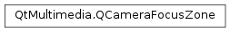

QCameraFocusZone¶
Synopsis¶
Detailed Description¶
The
PySide2.QtMultimedia.QCameraFocusZoneclass provides information on zones used for autofocusing a camera.For cameras that support autofocusing, in order for a camera to autofocus on part of a sensor frame, it considers different zones within the frame. Which zones to use, and where the zones are located vary between different cameras.
This class exposes what zones are used by a particular camera, and a list of the zones can be retrieved by a
QCameraFocusinstance.You can use this information to present visual feedback - for example, drawing rectangles around areas of the camera frame that are in focus, or changing the color of a zone as it comes into focus.
focus->setFocusPointMode(QCameraFocus::FocusPointAuto); QList<QCameraFocusZone> zones = focus->focusZones(); foreach (QCameraFocusZone zone, zones) { if (zone.status() == QCameraFocusZone::Focused) { // Draw a green box at zone.area() } else if (zone.status() == QCameraFocusZone::Selected) { // This area is selected for autofocusing, but is not in focus // Draw a yellow box at zone.area() } }See also
QCameraFocus
-
class
PySide2.QtMultimedia.QCameraFocusZone¶ -
class
PySide2.QtMultimedia.QCameraFocusZone(other) -
class
PySide2.QtMultimedia.QCameraFocusZone(area[, status=Selected]) Parameters: Creates a new, empty
PySide2.QtMultimedia.QCameraFocusZone.Creates a new
PySide2.QtMultimedia.QCameraFocusZoneas a copy ofother.Creates a new
PySide2.QtMultimedia.QCameraFocusZonewith the suppliedareaandstatus.
-
PySide2.QtMultimedia.QCameraFocusZone.FocusZoneStatus¶ Constant Description QCameraFocusZone.Invalid This zone is not valid QCameraFocusZone.Unused This zone may be used for autofocusing, but is not currently. QCameraFocusZone.Selected This zone is currently being used for autofocusing, but is not in focus. QCameraFocusZone.Focused This zone is being used for autofocusing and is currently in focus.
-
PySide2.QtMultimedia.QCameraFocusZone.area()¶ Return type: PySide2.QtCore.QRectFReturns the area of the camera frame that this focus zone encompasses.
Coordinates are in frame relative coordinates -
QPointF(0,0)is the top left of the frame, andQPointF(1,1)is the bottom right.
-
PySide2.QtMultimedia.QCameraFocusZone.isValid()¶ Return type: PySide2.QtCore.boolReturns true if this focus zone has a valid area and status.
-
PySide2.QtMultimedia.QCameraFocusZone.__ne__(other)¶ Parameters: other – PySide2.QtMultimedia.QCameraFocusZoneReturn type: PySide2.QtCore.boolReturns true if this focus zone is not the same as
other.
-
PySide2.QtMultimedia.QCameraFocusZone.__eq__(other)¶ Parameters: other – PySide2.QtMultimedia.QCameraFocusZoneReturn type: PySide2.QtCore.boolReturns true if this focus zone is the same as
other.
-
PySide2.QtMultimedia.QCameraFocusZone.setStatus(status)¶ Parameters: status – PySide2.QtMultimedia.QCameraFocusZone.FocusZoneStatusSets the current status of this focus zone to
status.
-
PySide2.QtMultimedia.QCameraFocusZone.status()¶ Return type: PySide2.QtMultimedia.QCameraFocusZone.FocusZoneStatusReturns the current status of this focus zone.
© 2018 The Qt Company Ltd. Documentation contributions included herein are the copyrights of their respective owners. The documentation provided herein is licensed under the terms of the GNU Free Documentation License version 1.3 as published by the Free Software Foundation. Qt and respective logos are trademarks of The Qt Company Ltd. in Finland and/or other countries worldwide. All other trademarks are property of their respective owners.